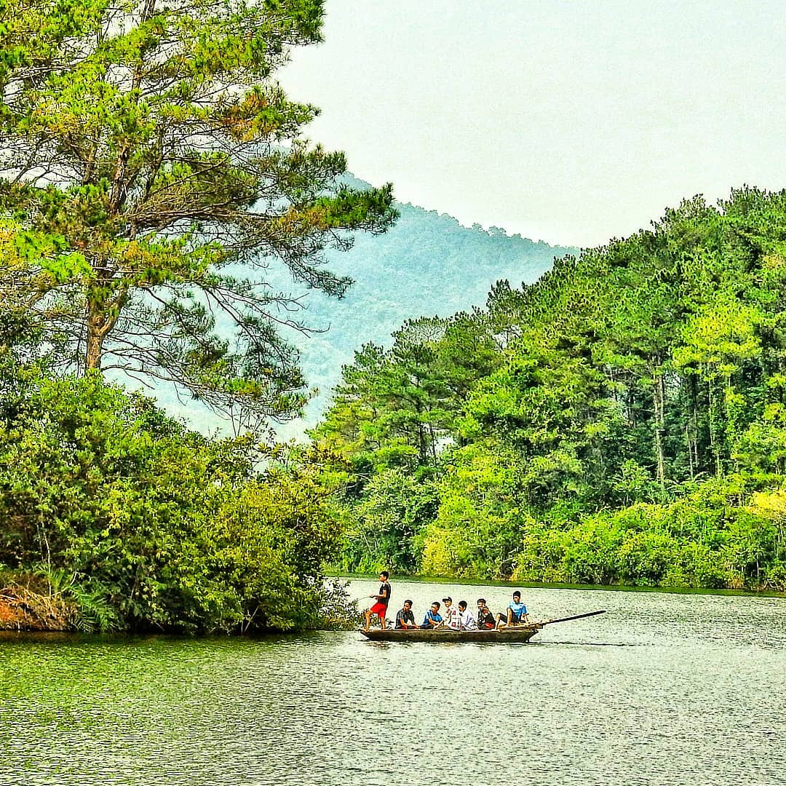
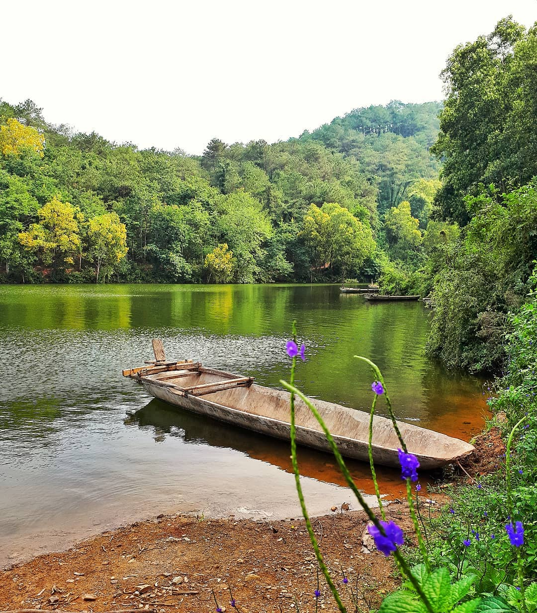
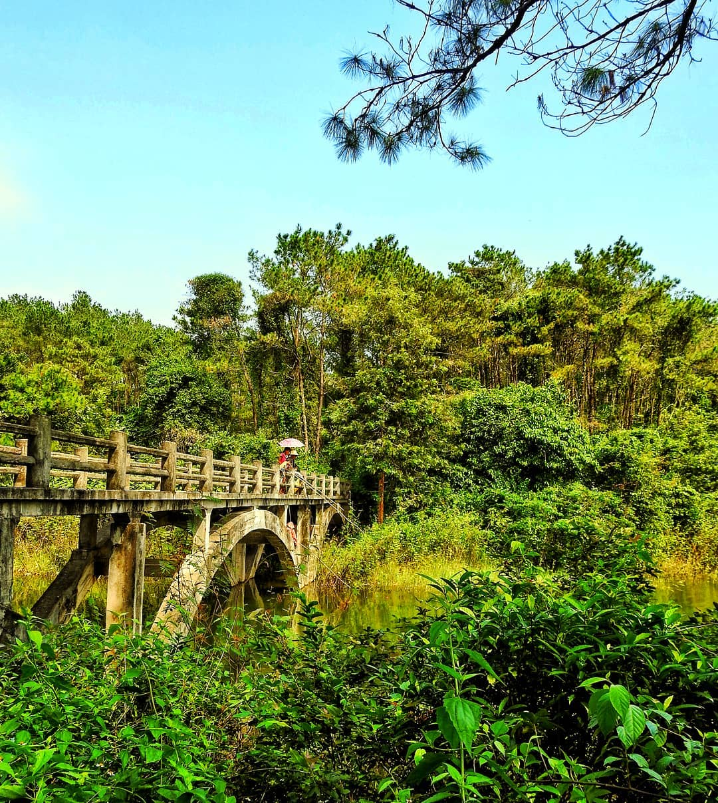
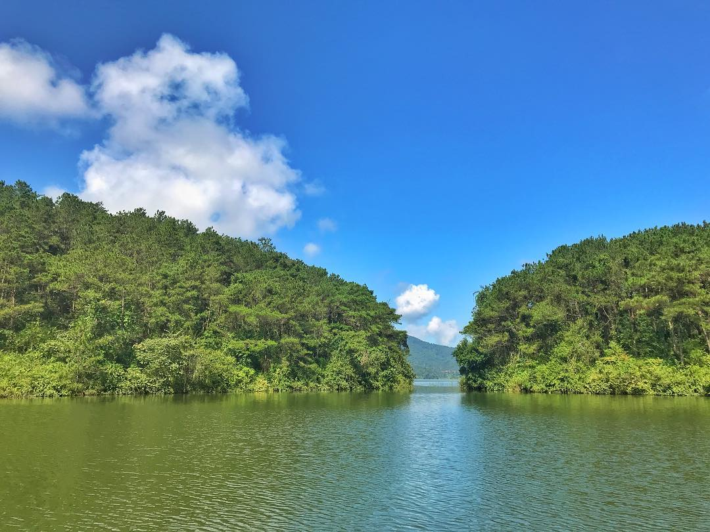

Khu du lịch Hồ Khuôn Thần
Mỗi tỉnh thành Việt Nam đều được ưu ái cho những cảnh sắc thiên nhiên phong phú, các danh lam thắng cảnh độc đáo. Bắc Giang cũng không nằm ngoài sự ưu ái đó. Nhắc đến Bắc Giang là nhắc đến các khu di tích tâm linh như chùa Vĩnh Nghiêm, chùa Bổ Đà, đình Lỗ Hạnh, Lăng Dinh Hương, Lăng Họ Ngọ gắn với nền văn hóa truyền thống độc đáo và lâu đời. Nhắc đến Bắc Giang là nhắc đến các địa điểm du lịch nổi tiếng như Suối Mỡ, Suối Nước Vàng, Hồ Cấm Sơn,… và không thể không nói đến Khu du lịch Hồ Khuôn Thần

Vị trí: xã Kiên Lao, huyện Lục Ngạn, tỉnh Bắc Giang
Giá vé: Miễn phí
Giờ mở cửa: Cả ngày
Cách di chuyển: Từ trung tâm thành phố Bắc Giang, du khách đi thẳng đường Xương Giang để đi ra QL31. Đi khoảng hơn 30km thì rẽ trái vào DT273. Lúc này chỉ cần hỏi người
dân hoặc xem chỉ dẫn google map là có thể đến nơi.

Khu du lịch Khuôn thần gồm 2 điểm nhấn là hồ và rừng Khuôn Thần. Rừng ở khu vực này có diện tích khoảng 800 ha, bao bọc quanh hồ có diện tích mặt nước khoảng hơn 240 ha. Với cảnh sắc thiên nhiên thơ mộng, hồ như một cô gái đẹp nằm mơ màng và duyên dáng giữa ngút ngàn thông reo và trập trùng những rừng tràm, keo tai tượng, những đồi vải thiều tươi tốt quanh năm. Lòng hồ có 5 đảo nhỏ hình đồi bát úp nổi lên giữa làn nước trong xanh.

Không gian yên bình, chỉ có tiếng gió thổi lao xao qua những cánh rừng thông bạt ngàn, tiếng chim hót lảnh lót, tiếng thú gọi bầy. Từ xa, hồ như một bức tranh đa sắc. Màu xanh biếc của lá, của trời phản chiếu xuống mặt hồ càng làm cho nước hồ thêm xanh. Màu vàng ươm như rót mật nhảy nhót trên từng phiến lá. Màu đỏ rực rỡ của những đồi vải đang vào mùa thu hoạch.

Đến đây, con người như hoà lòng mình vào thiên nhiên để cảm nhận cái yên bình, bỏ quên đi bao muộn phiền cuộc sống. Chính vì thế, nơi đây là địa điểm cắm trại, dã ngoại, thư giãn nổi tiếng với mọi du khách. Du khách có thể lênh đênh trên con thuyền, trôi theo dòng nước mát để bao quát được trọn vẹn cảnh sắc tươi đẹp nơi đây. Nếu vào mùa mưa, du khách còn có cơ hội chiêm ngưỡng vẻ đẹp hùng vĩ của dòng thác từ trên những đỉnh núi cao đổ vào lòng hồ tạo nên vẻ đẹp kỳ vĩ và và thơ mộng…